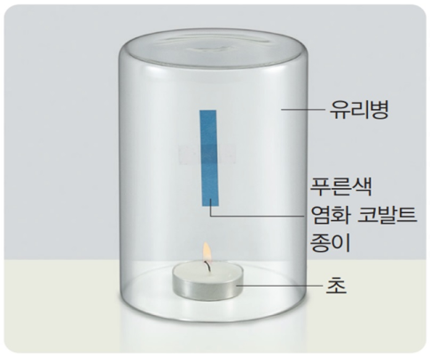

1번
다음은 초가 연소한 후 생성된 물질을 알아보는 실험입니다. 초가 연소한 후에 염화 코발트 종이에서 일어나는 변화와 실험을 통해 알 수 있는 연소 후 생성되는 물질이 바르게 짝지어진 것은?
개요

(1) 큰 아크릴 통의 안쪽 벽면에 셀로판테이프로 푸른색 염화 코발트 종이를 붙입니다.
(2) 초에 불을 붙이고 (1)의 아크릴 통으로 촛불을 덮습니다.
(3) 촛불이 꺼지면 푸른색 염화 코발트 종이의 색깔 변화를 관찰해 봅시다.
개요
염화 코발트 종이
생성되는 물질
붉은색으로 변한다.
이산화 탄소
붉은색으로 변한다.
물
노란색으로 변한다.
산소
노란색으로 변한다.
이산화 탄소
아무 변화가 없다.
물